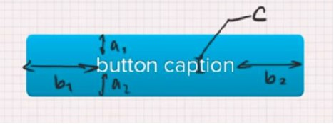

Мой Справочник | WEB-DESIGN | UI-дизайн
РЕАЛИЗМ |

|
Стиль, при котором элементы интерфейса максимально приближены к реальным. Его достаточно тяжело реализовывать. | ||
ПЛОСКИЙ СТИЛЬ (FLAT) |

|
Минималистичный дизайн, без лишних эффектов. | ||
Кнопки |

c = высота шрифта;
|
Самая важная кнопка выглядит соответствуеще. Тёплые тона притягивают. Если поля форма достаточно коротки, то есть смысл задать кнопке ширину как у полей |
||
Поля форм |
Если вариантов выбора менее 6, то лучше делать не select, а радио-кнопки Чекбоксы и радио-кнопки лучше в столбик, в строчку не удобно для пользователей Отделяйте главные действия от второстепенных * - такие звёздочки уже не рисуют Группировать поля, схожие по смыслу в отдельные блоки Форма как предложение, заголовок - подлежащее, кнопка - сказуемое Избегать повторений слов в форме Не нужно заставлять пользователей вводить излишнюю информацию |
|||
Лейблы |
Лучше располагать над полями, если рядом с полями, то лучше выравнивать по правому краю, чтобы не было пустот | |||